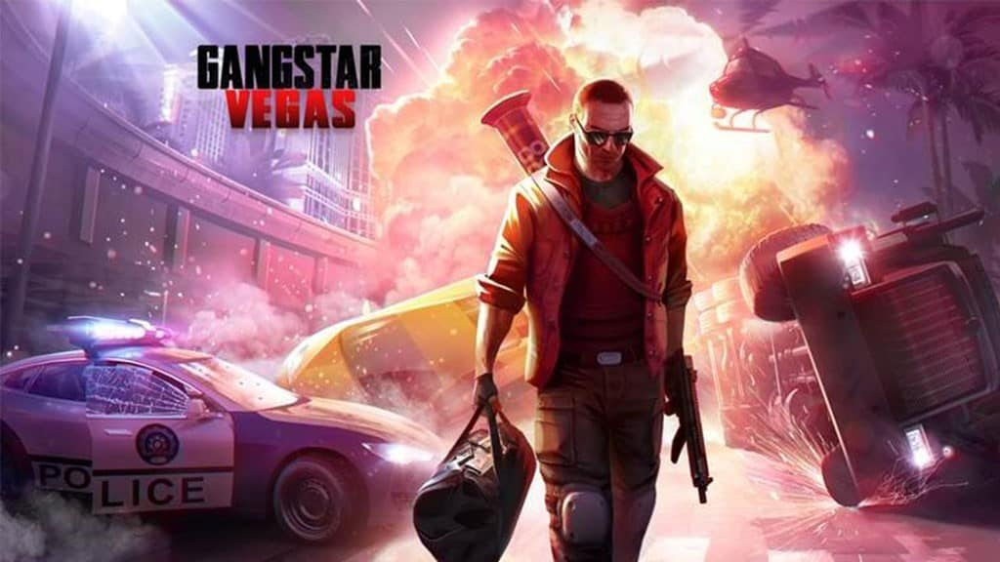
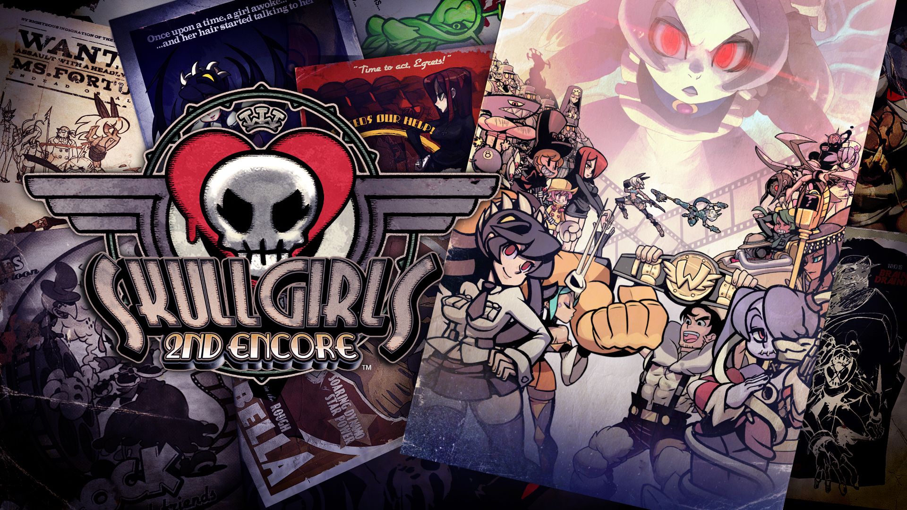

The witcher 29/10/2020

The Witcher 3: Wild Hunt (em polonês: Wiedźmin 3: Dziki Gon) é um jogo eletrônico de ação do subgênero RPG desenvolvido pela CD Projekt RED e lançado no dia 19 de maio de 2015 para as plataformas Microsoft Windows, PlayStation 4, Xbox One e em outubro de 2019 para o Nintendo Switch, sendo o terceiro título da série de jogos The Witcher. Ele sucede The Witcher (2007) e The Witcher 2: Assassins of Kings (2011), que foram baseados na série de livros de fantasia Wiedźmin, do escritor polonês Andrzej Sapkowski.
Ambientado em um gigantesco cenário medieval que dá liberdade total ao jogador, o game, que possui uma jogabilidade não linear e é jogado através de uma perspectiva em terceira pessoa, tem o lendário bruxo Geralt de Rívia como seu protagonista, o qual inicia uma longa jornada pelos Reinos do Norte. Enquanto a ordem planetária enfrenta uma grande mudança, com o misterioso e macabro exército de cavaleiros vermelhos conhecido como a "Caçada Selvagem" deixando somente sangue e ruína por onde passa, o jogador terá de enfrentar diversos perigos, usando espadas e magia num mundo em crise, à medida que interage com outros personagens e completa missões para o progresso da história, podendo viajar a pé, a barco, ou montado em Carpeado, o cavalo inseparável de Geralt.
Gangstar New Orleans 29/10/2020

A fantástica série de aventura em mundo aberto está de volta, dessa vez na fascinante New Orleans. Centenas de veículos, um arsenal insano, ação explosiva e toda a liberdade para explorar uma cidade imensa. Tudo isso para você se tornar uma lenda do crime. Gangues de motoqueiros, policiais corruptos e até feiticeiros vodu espalhados por ruas cheias de mistério e perigos. E você? Vai começar de baixo! Para se tornar o dono de sua própria capital do crime… passando por cima de tudo.
Gangstar Vegas 29/10/2020
Enfrente gangues e domine Vegas num mundo aberto com armas, carros e crime! Explore livremente um jogo de mundo aberto enorme cheio de guerras de gangue, roubos, vícios, corridas, tiroteio, conspirações de clãs, zumbis e outras divertidas e completamente insanas!
Skullgirls 29/10/2020
Controle meninas sensuais em Skullgirls, um jogo de luta muito louco, Skullgirls é um jogo de luta 2D para consoles e também Windows com um estilo visual único. O game é capaz de rivalizar com séries famosas japonesas, como Guilty Gear e o recente BlazBlue. O jogo também vai além dos socos e chutes e apresenta uma história, que explica quem são os personagens e como conseguiram suas habilidades e poderes, dando um pouquinho de mais profundidade ao conteúdo.
aki poderia vir um anuncio, mais era eu DIO!